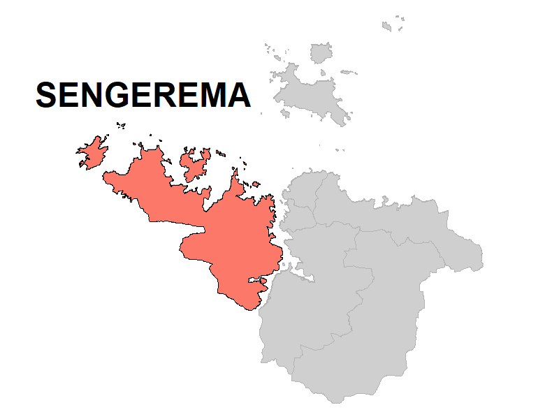

üìô Malaria case study - Part 1
1 Introduction
1.1 Overview
These pages will demonstrate how to use Quarto to data from Tanzania.
1.2 Learning objectives
- Test
2 Malaria research questions
Research questions in an enumerated list
3 Getting started
3.1 Access the Quarto template
Download the Quarto template used for this case study (add link) using GitHub.
3.1.1 Quarto resources
Review the R Basics page “Reading a RMarkdown Script”, or reference these resources: Rmarkdown introduction and Rmarkdown authoring basics.
```{r}
install.packages("ggplot2")
install.packages("ggthemes")
install.packages("networkD3")
install.packages("apyramid")
```3.2 Dataset description
We will be using data and examples from a real consultation data which occurred in Tanzania between start date and end date.
DISCLAIMER: The Ifakara Health Institute has approved the use of this data for training purposes. Please note, that some data has been adapted in order to best achieve training objectives. No personally indentifiable information have been kept in this dataset.
Information about the consultations of 10,308 children [1 day - 59 months] from 18 facilities (dispensaries and health centres) in Kaliua District, Sengerema District and Tanga District, Tanzania.


Data were collected using ODK (ODK Collect, ODK Central) between start date and end date. Data were made available by IHI and Swiss TPH and the Tools for Integrated Management of Childhood Illness (TIMCI) project.
Data are stored in dataset1.dta.
3.3 Data collection
Research assistants recorded the following information from different sources.
| Information | Prefix | Source |
|---|---|---|
| Context | CTX | Metadata |
| Sociodemographics | SDC | Caregiver |
| Clinical presentation | CLIN | Caregiver |
| Laboratory investigations | TEST | Child booklet or facility MTUHA book |
| Diagnoses | DX | Child booklet or facility MTUHA book |
| Treatments | RX | |
|
Caregiver | |
|
Child booklet or facility MTUHA book | |
| Referral advice | MGMT | |
| Caregiver | ||
| Child booklet or facility MTUHA book |
3.4 Data preparation
Data cleaning and data de-identification
Personally identifiable information (PII) were removed.
3.5 Import the data
✏️ Exercise 1
- Import the dataset and store it into a dataframe called df.
- Select columns child_ID, CONSULT_month, CONSULT_district, SDC_age_in_month for the first 5 rows in data frame
df. - Display in a table with the following characteristics:
- Align the content of the first column to the left and the content of the other 3 columns to the centre.
- Add a caption.
| child_ID | CONSULT_month | CONSULT_district | SDC_age_in_month |
|---|---|---|---|
| 1 | 7 | Kaliua | 10 |
| 2 | 7 | Kaliua | 6 |
| 3 | 7 | Kaliua | 6 |
| 4 | 7 | Kaliua | 11 |
| 5 | 8 | Kaliua | 21 |
4 Population characteristics
4.1 Codebook
| Variable | Coding |
|---|---|
| SDC_age_in_month | |
| SDC_sex | 1: male 2: female 98: unknown |
| CLIN_fever | 0: no 1: yes 98: not sure |
| CLIN_fever_onset | |
| CLIN_cough | 0: no 1: yes 98: not sure |
| CLIN_diarrhoea | 0: no 1: yes 98: not sure |
| RX_preconsult_antibiotics | |
| RX_preconsult_antimalarials | |
| CONSULT_district | Kaliua Sengerema Tanga |
| CONSULT_area | urban rural |
| CONSULT_facility_type | dispensary health centre |
4.2 Structure of the data
✏️ Exercise 2
Add the following two new variables to data frame df
| Variable | Coding |
|---|---|
| SDC_age_category | <2 months 2-11 months 12-23 months 24-35 months 36-47 months 48-59 months |
| CLIN_fever_onset_category | <2 days 2-3 days 4-6 days ≥7 days |
✏️ Exercise 3
Examine the structure of the data, including variable names, labels.
| Name | Piped data |
| Number of rows | 10308 |
| Number of columns | 72 |
| _______________________ | |
| Column type frequency: | |
| character | 3 |
| factor | 3 |
| numeric | 5 |
| ________________________ | |
| Group variables | None |
Variable type: character
| skim_variable | n_missing | complete_rate | min | max | empty | n_unique | whitespace |
|---|---|---|---|---|---|---|---|
| CONSULT_district | 0 | 1 | 5 | 9 | 0 | 3 | 0 |
| CONSULT_area | 0 | 1 | 5 | 5 | 0 | 2 | 0 |
| CONSULT_facility_type | 0 | 1 | 10 | 13 | 0 | 2 | 0 |
Variable type: factor
| skim_variable | n_missing | complete_rate | ordered | n_unique | top_counts |
|---|---|---|---|---|---|
| SDC_sex | 0 | 1 | FALSE | 3 | 1: 5229, 2: 5075, 98: 4 |
| CLIN_fever | 0 | 1 | FALSE | 3 | 1: 7225, 0: 3068, 98: 15 |
| CLIN_cough | 0 | 1 | FALSE | 3 | 1: 5635, 0: 4658, 98: 15 |
Variable type: numeric
| skim_variable | n_missing | complete_rate | mean | sd | p0 | p25 | p50 | p75 | p100 | hist |
|---|---|---|---|---|---|---|---|---|---|---|
| SDC_age_in_month | 0 | 1.0 | 18.75 | 14.90 | 0 | 7 | 15 | 27 | 59 | ▇▆▃▂▁ |
| CLIN_fever_onset | 3083 | 0.7 | 2.50 | 1.93 | 0 | 1 | 2 | 3 | 14 | ▇▅▁▁▁ |
| CLIN_diarrhoea | 0 | 1.0 | 0.41 | 4.32 | 0 | 0 | 0 | 0 | 98 | ▇▁▁▁▁ |
| RX_preconsult_antibiotics | 0 | 1.0 | 0.17 | 0.37 | 0 | 0 | 0 | 0 | 1 | ▇▁▁▁▂ |
| RX_preconsult_antimalarials | 0 | 1.0 | 0.04 | 0.20 | 0 | 0 | 0 | 0 | 1 | ▇▁▁▁▁ |
✏️ Exercise 4
Display descriptive statistics for the population characteristics.
- Stata
- R: use the tbl_summary function from the
gtsummarypackage
| Characteristic | N = 10,3081 |
|---|---|
| SDC_age_category | |
| <2 months | 597 (5.8%) |
| 02-11 months | 3,576 (35%) |
| 12-23 months | 2,947 (29%) |
| 24-35 months | 1,529 (15%) |
| 36-47 months | 980 (9.5%) |
| 48-59 months | 679 (6.6%) |
| SDC_sex | |
| 1 | 5,229 (51%) |
| 2 | 5,075 (49%) |
| 98 | 4 (<0.1%) |
| CLIN_fever | |
| 0 | 3,068 (30%) |
| 1 | 7,225 (70%) |
| 98 | 15 (0.1%) |
| CLIN_fever_onset_category | |
| 3,083 (30%) | |
| <2 days | 1,998 (19%) |
| >= 7 days | 343 (3.3%) |
| 2-3 days | 4,386 (43%) |
| 4-6 days | 498 (4.8%) |
| CLIN_diarrhoea | |
| 0 | 7,982 (77%) |
| 1 | 2,306 (22%) |
| 98 | 20 (0.2%) |
| CLIN_cough | |
| 0 | 4,658 (45%) |
| 1 | 5,635 (55%) |
| 98 | 15 (0.1%) |
| RX_preconsult_antibiotics | 1,735 (17%) |
| RX_preconsult_antimalarials | 442 (4.3%) |
| CONSULT_district | |
| Kaliua | 2,429 (24%) |
| Sengerema | 2,703 (26%) |
| Tanga | 5,176 (50%) |
| CONSULT_area | |
| rural | 4,088 (40%) |
| urban | 6,220 (60%) |
| CONSULT_facility_type | |
| dispensary | 5,599 (54%) |
| health center | 4,709 (46%) |
| 1 n (%) | |
4.3 Missing values
Identify missing values in each variable: missing_plot
/\ /\
{ `---' }
{ O O }
==> V <== No need for mice. This data set is completely observed.
\ \|/ /
`-----'
CONSULT_district CONSULT_facility_ID CLIN_fever DX_malaria
10308 1 1 1 1 0
0 0 0 0 05 Healthcare provider actions
5.1 Codebook
- Temperature measured
- Fever measured
- Fever (temp or history)
- Malaria test
- Any severe diagnosis
- Malaria diagnosis
- Malaria treatment
- Referral
| Variable | Coding |
|---|---|
| MEAS_temperature | |
| TEST_malaria_result | 0: negative 1: positive 2: indeterminate 95: unreadable result 98: not sure |
| DX_malaria | 0: no 1: yes |
| RX_antimalarials | 0: no 1: yes |
| MGMT_referral_src_caregiver | |
| MGMT_referral_src_registry |
5.2 Structure of the data
5.2.1 ✏️ Exercise 5
Examine the structure of the data, including variable names, labels.
5.2.2 R
| Name | Piped data |
| Number of rows | 10308 |
| Number of columns | 72 |
| _______________________ | |
| Column type frequency: | |
| factor | 1 |
| numeric | 6 |
| ________________________ | |
| Group variables | None |
Variable type: factor
| skim_variable | n_missing | complete_rate | ordered | n_unique | top_counts |
|---|---|---|---|---|---|
| TEST_malaria_done | 0 | 1 | FALSE | 2 | 1: 5763, 0: 4545 |
Variable type: numeric
| skim_variable | n_missing | complete_rate | mean | sd | p0 | p25 | p50 | p75 | p100 | hist |
|---|---|---|---|---|---|---|---|---|---|---|
| MEAS_temperature | 9271 | 0.10 | 37.08 | 0.98 | 34.5 | 36.5 | 37 | 37.5 | 42.5 | ▃▇▃▁▁ |
| TEST_malaria_result | 4550 | 0.56 | 1.20 | 9.93 | 0.0 | 0.0 | 0 | 0.0 | 98.0 | ▇▁▁▁▁ |
| DX_malaria | 0 | 1.00 | 0.17 | 0.38 | 0.0 | 0.0 | 0 | 0.0 | 1.0 | ▇▁▁▁▂ |
| RX_antimalarials | 0 | 1.00 | 0.13 | 0.33 | 0.0 | 0.0 | 0 | 0.0 | 1.0 | ▇▁▁▁▁ |
| MGMT_referral_src_caregiver | 0 | 1.00 | 0.22 | 4.50 | 0.0 | 0.0 | 0 | 0.0 | 98.0 | ▇▁▁▁▁ |
| MGMT_referral_src_registry | 0 | 1.00 | 0.01 | 0.10 | 0.0 | 0.0 | 0 | 0.0 | 1.0 | ▇▁▁▁▁ |
5.2.3 ✏️ Exercise 3
Add the following two new variables to data frame df
- MEAS_fever
- Fever (temp or history)
- Stata: use the gen command
- R: use the mutate function from the
dplyrpackage
5.2.4 ✏️ Exercise 6
Display descriptive statistics for the following healthcare provider actions:
- R: use the tbl_summary function from the
gtsummarypackage
| Characteristic | N = 10,3081 |
|---|---|
| CALC_temperature_measured | 1,037 (10%) |
| CALC_fever | 326 (31%) |
| (Missing) | 9,271 |
| CALC_fever_or_temp | 7,252 (97%) |
| (Missing) | 2,842 |
| TEST_malaria_done | |
| 0 | 4,545 (44%) |
| 1 | 5,763 (56%) |
| TEST_malaria_result | |
| 0 | 4,665 (81%) |
| 1 | 1,032 (18%) |
| 2 | 1 (<0.1%) |
| 95 | 3 (<0.1%) |
| 98 | 57 (1.0%) |
| (Missing) | 4,550 |
| DX_malaria | 1,800 (17%) |
| RX_antimalarials | 1,290 (13%) |
| MGMT_referral_src_caregiver | |
| 0 | 10,122 (98%) |
| 1 | 164 (1.6%) |
| 97 | 9 (<0.1%) |
| 98 | 13 (0.1%) |
| MGMT_referral_src_registry | 114 (1.1%) |
| 1 n (%) | |
6 Number of consultations by facility
6.1 ✏️ Exercise 6
Plot the number of consultations by facility in bars, grouped by district.
- Stata:
- R:

6.2 Age pyramid
[1] 10308[1] 10304
7 Fever assessment
Comparison of systems effectiveness decay for malaria assessment and treatment in facilities. Steps reflecting adherence to guidelines are shown in blue, non-adherence shown in red, and not applicable in grey.
7.1 Facility F4153
7.2 Facility F9222
Sequence
- temp measurement by reported fever; by facility
Pearson's Chi-squared test
data: df$CLIN_fever and df$TEST_malaria_result
X-squared = 61.449, df = 8, p-value = 2.42e-10| Characteristic | F2261, N = 2671 | F4153, N = 8211 | F0364, N = 9541 | F9222, N = 2401 | F3750, N = 4961 | F3969, N = 3441 | F9572, N = 4701 | F1600, N = 6451 | F4084, N = 7901 | F2513, N = 4411 | F4253, N = 8581 | F7379, N = 1,0011 | F7766, N = 3871 | F5451, N = 811 | F8122, N = 4861 | F6881, N = 4981 | F3671, N = 9021 | F6123, N = 6271 | p-value2 |
|---|---|---|---|---|---|---|---|---|---|---|---|---|---|---|---|---|---|---|---|
| MEAS_temperature | 37.50 (37.00, 37.50) | NA (NA, NA) | 39.50 (39.25, 39.75) | 36.50 (36.50, 37.00) | 36.50 (36.00, 37.00) | 37.00 (37.00, 37.00) | 38.50 (37.00, 38.50) | 37.00 (36.50, 38.00) | 37.25 (37.00, 38.88) | 37.00 (37.00, 38.00) | 37.00 (37.00, 37.50) | 38.00 (37.62, 38.38) | 38.25 (38.12, 38.38) | 39.00 (38.25, 39.50) | 37.00 (36.50, 38.00) | 36.50 (36.50, 37.50) | 37.00 (36.50, 37.50) | 36.00 (36.00, 37.00) | <0.001 |
| Unknown | 210 | 821 | 952 | 86 | 467 | 338 | 445 | 586 | 776 | 202 | 837 | 995 | 385 | 78 | 322 | 297 | 880 | 594 | |
| 1 Median (IQR) | |||||||||||||||||||
| 2 Kruskal-Wallis rank sum test | |||||||||||||||||||
- also showing ‘prevalence’ of fever when of whole clinic vs of those who measure to indicate bias
8 Malaria tests
- malaria tests of those with history or measured fever
0 1 2 95 98
FALSE 70 2 0 1 1
TRUE 3952 966 1 2 47
Pearson's Chi-squared test
data: df$CALC_fever_or_temp and df$TEST_malaria_result
X-squared = 33.92, df = 4, p-value = 7.74e-07| Characteristic | F2261, N = 1901 | F4153, N = 5811 | F0364, N = 7801 | F9222, N = 1971 | F3750, N = 4061 | F3969, N = 2091 | F9572, N = 3581 | F1600, N = 4671 | F4084, N = 4911 | F2513, N = 3011 | F4253, N = 5501 | F7379, N = 6031 | F7766, N = 2701 | F5451, N = 621 | F8122, N = 3581 | F6881, N = 3301 | F3671, N = 6831 | F6123, N = 4161 |
|---|---|---|---|---|---|---|---|---|---|---|---|---|---|---|---|---|---|---|
| TEST_malaria_result | ||||||||||||||||||
| 0 | 83 (67%) | 151 (33%) | 319 (54%) | 125 (82%) | 285 (75%) | 135 (98%) | 159 (95%) | 371 (93%) | 226 (95%) | 213 (96%) | 221 (97%) | 346 (97%) | 21 (25%) | 32 (57%) | 242 (92%) | 225 (91%) | 511 (90%) | 287 (97%) |
| 1 | 38 (31%) | 300 (66%) | 270 (46%) | 28 (18%) | 95 (25%) | 0 (0%) | 2 (1.2%) | 25 (6.3%) | 7 (2.9%) | 4 (1.8%) | 6 (2.6%) | 6 (1.7%) | 59 (69%) | 20 (36%) | 20 (7.6%) | 21 (8.5%) | 55 (9.7%) | 10 (3.4%) |
| 2 | 0 (0%) | 0 (0%) | 1 (0.2%) | 0 (0%) | 0 (0%) | 0 (0%) | 0 (0%) | 0 (0%) | 0 (0%) | 0 (0%) | 0 (0%) | 0 (0%) | 0 (0%) | 0 (0%) | 0 (0%) | 0 (0%) | 0 (0%) | 0 (0%) |
| 95 | 1 (0.8%) | 0 (0%) | 1 (0.2%) | 0 (0%) | 0 (0%) | 0 (0%) | 0 (0%) | 0 (0%) | 0 (0%) | 0 (0%) | 0 (0%) | 0 (0%) | 0 (0%) | 0 (0%) | 0 (0%) | 0 (0%) | 0 (0%) | 0 (0%) |
| 98 | 2 (1.6%) | 5 (1.1%) | 1 (0.2%) | 0 (0%) | 0 (0%) | 3 (2.2%) | 6 (3.6%) | 2 (0.5%) | 6 (2.5%) | 6 (2.7%) | 0 (0%) | 3 (0.8%) | 5 (5.9%) | 4 (7.1%) | 0 (0%) | 1 (0.4%) | 3 (0.5%) | 0 (0%) |
| Unknown | 66 | 125 | 188 | 44 | 26 | 71 | 191 | 69 | 252 | 78 | 323 | 248 | 185 | 6 | 96 | 83 | 114 | 119 |
| 1 n (%) | ||||||||||||||||||
9 Malaria treatments
- malaria diagnoses vs. positive tests vs. treatment.
| Var1 | Var2 | Var3 | Freq |
|---|---|---|---|
| 0 | 0 | 0 | 3890 |
| 1 | 0 | 0 | 15 |
| 2 | 0 | 0 | 1 |
| 95 | 0 | 0 | 2 |
| 98 | 0 | 0 | 31 |
| 0 | 1 | 0 | 645 |
| 1 | 1 | 0 | 49 |
| 2 | 1 | 0 | 0 |
| 95 | 1 | 0 | 1 |
| 98 | 1 | 0 | 17 |
| 0 | 0 | 1 | 99 |
| 1 | 0 | 1 | 50 |
| 2 | 0 | 1 | 0 |
| 95 | 0 | 1 | 0 |
| 98 | 0 | 1 | 2 |
| 0 | 1 | 1 | 31 |
| 1 | 1 | 1 | 918 |
| 2 | 1 | 1 | 0 |
| 95 | 1 | 1 | 0 |
| 98 | 1 | 1 | 7 |
Pearson's Chi-squared test
data: df$TEST_malaria_result and df$DX_malaria
X-squared = 2582, df = 4, p-value < 2.2e-16
Pearson's Chi-squared test
data: df$TEST_malaria_result and df$RX_antimalarials
X-squared = 4508.8, df = 4, p-value < 2.2e-16| Characteristic | F2261, N = 411 | F4153, N = 3201 | F0364, N = 2881 | F9222, N = 281 | F3750, N = 1051 | F3969, N = 01 | F9572, N = 21 | F1600, N = 251 | F4084, N = 71 | F2513, N = 41 | F4253, N = 61 | F7379, N = 91 | F7766, N = 611 | F5451, N = 211 | F8122, N = 221 | F6881, N = 211 | F3671, N = 591 | F6123, N = 131 |
|---|---|---|---|---|---|---|---|---|---|---|---|---|---|---|---|---|---|---|
| DX_malaria | 40 (98%) | 311 (97%) | 285 (99%) | 27 (96%) | 71 (68%) | 0 (NA%) | 2 (100%) | 17 (68%) | 5 (71%) | 4 (100%) | 6 (100%) | 6 (67%) | 59 (97%) | 21 (100%) | 22 (100%) | 21 (100%) | 57 (97%) | 13 (100%) |
| RX_antimalarials | 40 (98%) | 288 (90%) | 283 (98%) | 26 (93%) | 104 (99%) | 0 (NA%) | 2 (100%) | 23 (92%) | 5 (71%) | 2 (50%) | 4 (67%) | 5 (56%) | 57 (93%) | 21 (100%) | 21 (95%) | 21 (100%) | 55 (93%) | 11 (85%) |
| 1 n (%) | ||||||||||||||||||